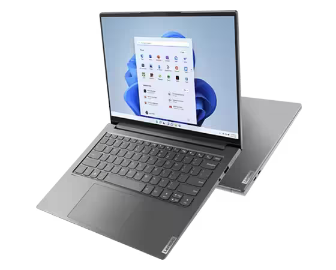
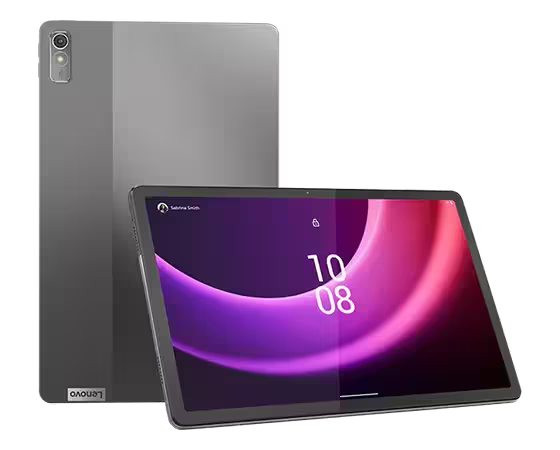
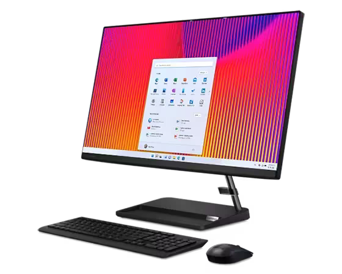

Lernfeld 2
Arbeitsplätze nach Kundenwunsch ausstatten
Ziel des Lernfeld ist die Kompetenz zu erlangen, die Ausstattung
eines Arbeitsplatzes nach Kundenwunsch zu dimensionieren,
anzubieten, zu beschaffen und den Arbeitsplatz an die Kunden zu übergeben.
Fachbegriffe und deren Bedeutung
To be added...
Thementag 1 - Übersicht zu IT Systemen
Unsere Aufgabe für den Tag war,
für einen Flughafenbetreiber ein modernes und agiles Bürokonzept zu erstellen.
Die Aufgabenstellung haben wir wie folgt bewältigt:
Zuerst haben wir die verschiedenen Arbeitsplatzbereiche unterteilt in Mobile-,
Kassen/Kiosk- und Büro Arbeitsumgebungen. Dadurch konnten wir wichtige Gerätekriterien
ausmachen, welche in diesen Bereichen benötigt bzw. vorausgesetzt werden.
Mobile Arbeitsumgebungen
Für IT Abteilung, Techniker und generell Personen, welcher Arbeitsplatz ständig oder
öfters an verschiedenen Orten sein kann.
- Voraussetzungen sind kompakte Größe und Leichtes Gewicht.
- Potentielle erweiterung durch Dockingstations für den Wechsel von Büro zu Homeoffice.
- Robustheit und Durchhaltevermögen in vorm von Akku-Kapazität ist ein großes muss für
die Arbeit unterwegs unter verschiedensten Bedingungen.
Kassen / Kiosk Arbeitsumgebungen
Für Personell, welche mit Kunden zu tun haben oder für Kunden selbst zur selbstbedienung.
- Zuverlässigkeit und Simplicity sind wichtige Punkte für Geräte welche im Kundenservice benutzt werden.
- Elegantes Design und einfache Form vermitteln gegenüber dem Kunden Professionalität und Zuversicht.
Büro Arbeitsumgebungen
Für Personell mit festem Arbeitsplatz im Büro, etc..
- Hohe Leistung und Zuverlässigkeit der Geräte sind wichtige Voraussetzungen für die Arbeit im Büro.
- Größe und Form sind zwar im Büro nicht ganz so sehr wichtig wie in anderen Bereichen, jedoch kann
es eine gute Basis für einen Ergonomischen Arbeitsplatz sein.
- Der Geräuschpegel des PC sollte ebenfalls mäßig bis leise sein, da es in einem durchschnittlichem
Büroumfeld schnell sehr laut werden kann durch verschiedenste Geräuschquellen.
Anschließend anhand der Kriterien haben wir passende Geräte rausgesucht:
Mobile Arbeitsumgebungen

Lenovo Yoga Pro 7i Gen 8 (14″) Intel
- Intel® Core™ i5-13500H Prozessor der 13. Generation (E- Kerne bis zu 3,50 GHz P-Kerne bis zu 4,70 Ghz)
- 16 GB LPDDR5-5200MHz
- 512 GB SSD
- USB-C Intel Thunderbolt 4
- USB-C 3.2 Gen 2
- HDMI 2.1
- USB-A 3.2 Gen 1
- Bluetooth 5.1, Wi-Fi 6E
Klein, leicht, handlich und gut verstaubar

Lenovo Tab P11 (2nd Gen)
- MediaTek® Helio G99 Octa-Core 2 x A76 2,2GHz + 6 x A55 2,0GHz
- 64 GB interner Speicher
- 4GB Arbeitsspeicher
Klein, fragil, leicht, handlich und gut verstaubar
Kassen / Kiosk Arbeitsumgebungen

IdeaCentre AIO 3 27 (R7-Windows 11 Home-16GB-1TB)
- AMD Ryzen™ 7 7730U Prozessor (2,00 GHz bis zu 4,50GHz)
- Integrierte AMD Radeon™-Grafik
- 16 GB DDR4-3200MHz (SODIMM) - (2 x 8 GB)
- 1 TB SSD M.2 2280 PCIe Gen4 TLC
- 27″ FHD (1920 x 1080), IPS, Anti-Glare, Non-Touch, 72%NTSC, 250 nits, 14 ms, WLED Backlight
- Wi-Fi 6 (2x2) & Bluetooth® 5.1 oder höher
Perfekt für die Anwendung an der Kasse, ein Gerät kaum Kabel einfaches Setup. Mit Optionalem
Touchscreen wird Barrierefreies Arbeiten ermöglicht. Sehr hohe Leistung und Garantierte Stabilität im Arbeitsablauf.
Büro Arbeitsumgebungen
Thementag 2 - Hardware-Komponenten und ihre Funktionsweise
To be added...